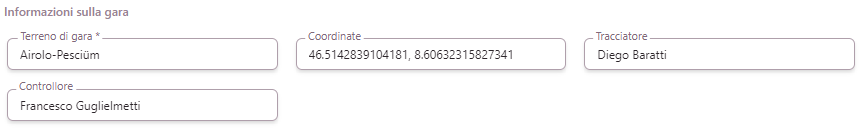
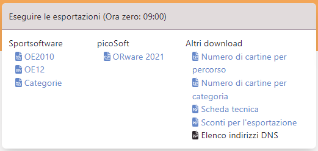

Portale OL-Events - Per gli Organizzatori¶
Panoramica di OL-Events¶
OL-Events è un portale svizzero specifico per iscrizioni a gare di corsa d'orientamento.
Link: ol-events.ch.
Caratteristiche principali:
- Gestione completa delle iscrizioni
- Connessione alla banca dati dei concorrenti SOLV
- Gestione dei pagamenti (Non per i TMO)
- Esportazione delle iscrizioni per OL-Einzel
- Integrazione diretta con OL-Einzel OE12
- Supporto per gare singole o eventi di più gare
- Gestione avanzata della gara per gli organizzatori
NOTA: per i TMO valgono condizioni speciali.
- I pagamenti non sono gestiti dal portale ma dall'organizzatore (fattura per società).
- Il prezzo del servizio è una tassa fissa concordata con la CTCO
- Non sono comprese funzionalità o configurazioni speciali. Per esigenze particolari, contattare il gestore del portale Supsign
Creazione gara¶
Il portale non permette (ancora) la creazione autonoma di una gara. La procedura descritta sul sito non vale per le gare TMO, in quanto la parte contrattuale è relativa ai pagamenti e quindi superflua per le gare ticinesi.
Per creare una nuova gara, spedire un email a support@ol-events.ch con le seguenti indicazioni:
- Nome della gara
- Società organizzatrice
(*) - Nome e cognome degli amministratori della gara sul portale.
Questi utenti devono essersi registrati come utenti sul portale (vedi Registrazione iniziale) - Indicazione che si tratta di una gara TMO ticinese
- Data della gara
- Data della scadenza delle iscrizioni (di regola la domenica prima della gara)
- Data dell'apertura delle iscrizioni
- Tasse d'iscrizione se non corrispondono a quelle standard da RECO
- Dettagli per il pagamento
(*)
Nome e cognome, indirizzo e email.
Non gestendo i pagamenti sul portale, questi dati sono solo informativi per i concorrenti, ma la persona indicata è responsabile del pagamento della fattura a OL-Events per la gestione della gara.
Gli utenti indicati come amministratori hanno la possibilità di modificare autonomamente questi dati e dovranno completarli e verificarli prima della pubblicazione della gara.
I dati contrassegnati con (*) non sono modificabili dagli amministratori, ma unicamente dal team di OL-Events.
Selezione gara¶
Per visualizzare le gare per le quali sei registrato come amministratore, seleziona Corse nel menu a sinistra, e attiva il filtro Organizzatore.
Clicca sul nome della gara per visualizzare i dettagli e la lista dei concorrenti già iscritti.
Scrolla in basso per vedere la sezione Amministrazione e clicca il link alla gestione della gara per accedere al pannello di controllo della gara.
Pannello di controllo della gara¶
In qualità di amministratore della gara, premendo sul link alla gestione della gara mostra il seguente pannello di controllo.

Il pannello contiene diverse schede:
-
Gestione evento
Il linkGestione amministratoripermette di gestire i diritti di amministratore della gara.
È possibile assegnare i diritti a qualsiasi utente registrato sul portale, cercandolo per nome.
La lista mostra gli amministratori attuali con la possibilità di revoca a ogni singolo amministratore.
Nota: l'utenteAdmin Adminè predefinito dal portale. -
Gestione gara
Questa scheda contiene una lista di link a varie pagine per la gestione della gara. Vedi la prossima sezione per i dettagli -
Beneficiario
I dati relativi al beneficiario dei pagamenti. Dato che non viene effettuato un pagamento, questi sono dati informativi sulla società e la persona che ne gestisce le finanze. -
Informazioni
Questa scheda riassume lo stato di varie opzioni.
Per i TMO di regola sono spuntati solo due voci:pubblicato: attivo quando la gara è visibile agli utenti. Il link porta direttamente alla pagina come la vedono gli utenti, opzione comoda per verificare le conseguenze delle proprie mutazioni a vari dati della gara.Iscrizione possibile: questa opzione è spuntata quando sono aperte le iscrizioni.
-
Finanze
Riassunto delle tasse d'iscrizione dei concorrenti attualmente iscritti. -
Richieste di ora di inizio
Gestione degli orari di partenza per blocchi regionali.
OL-Events assegna un blocco di partenza ad ogni concorrente basandosi sulla sua provenienza regionale. Per i TMO non vengono fatte distinzioni per regione, per cui ogni regione viene impostata al blocco numero5.
L'opzioneEDITin alto a destra permette di modificare il blocco assegnato ad ogni regione.
I numeri dei blocchi sono:- 1: partenza prestissimo (per collaboratori)
- 2: desiderio di pertenza
presto - 3: primo gruppo di regioni
- 5: secondo gruppo di regioni
- 7: terzo gruppo di regioni
- 8: desiderio di partenza
tardi - 9: partenza tardissimo (per collaboratori)
I gruppi
1,4,6e9non vengono assegnati dal portale, ma possono tornare utili all'organizzatore per soddisfare richieste di singoli concorrenti o dei propri collaboratori.
-
Sconti
Lista delle società ticinesi (comprese varie combinazioni) i cui soci non pagano le iscrizioni direttamente, ma che beneficiano del pagamento della società.
Questa lista serve solo relativamente, in quanto la gestione delle finanze è demandata all'applicazione per la gestione della gara (per i più a OL-Einzel). Infatti, il portale non ha conoscenza delle mutazioni e delle iscrizioni sul posto, fondamentali per una corretta gestione contabile della gara. -
PartecipantiNella parte bassa della pagina, non mostrata nell'immagine, si trova una grande scheda con tutti gli iscritti ordinati per categoria. È possibile modificare la categoria, il numero chip e la società di ogni concorrente.

Gestione gara¶
La scheda Gestione gara contiene una serie di link a pagine per la visione e eventuale modifica di svariati aspetti della gara.

Le voci principali sono marcate in grassetto:
-
Iscrivi concorrenti
Permette di iscrivere concorrenti, ricercandoli per cognome e nome tra gli utenti registrati sul portale. -
Modifica i dettagli
Permette la visione e modifica della maggior parte dei campi "utili". Vedi la prossima sezione per i dettagli -
Gestione documenti
È possibile caricare documenti (ad esempio i PDF dell'annuncio gara e delle ultime info) trascinandoli nell'apposita sezione, o selezionandoli cliccando sul tasto+.
Assegnareadditionalcome tipo di documento.
NOTA: visto che i documenti vanno caricati comunque sul sito ASTi, vale la pena non caricarli su OL-Events ma far sempre e solo riferimento a quelli sul sito ASTi. -
Gestione tempi di partenza
Questa opzione crea confusione, in quanto non permette in realtà la selezione della finestra delle partenze (dall'orario della prima partenza a quello dell'ultima), bensì sono unicamente le relative date.
Quindi indicare in ambedue i campi la data della gara. -
Modifica tassa d'iscrizione
Questa opzione permette la modifica delle tasse d'iscrizione delle varie fasce d'età, ma non quella fisse per categoria, come la tassa degliOK.
Nota: le tasse assegnate ai concorrenti già iscritti non verranno modificate. Se ci sono già diversi concorrenti iscritti, chiedere al gestore del portale di modificare le tasse d'iscrizione, aggiornando anche quelle dei concorrenti iscritti. -
Modifica sconti
Pagina con varie schede per la gestione degli sconti.- Nella scheda
Crea uno scontoè possibile creare uno sconto a scelta con un importo fisso o con una percentuale (ma non entrambi). - Nella scheda
Assegna uno scontosi assegna un tipo di sconto ad un concorrente o ad una società (ma non a entrambi). - In
Sconti assegnatisono visualizzati tutti gli sconti, raggruppati per tipologia di sconto. È possibile cancellare le registrazioni singolarmente. Nota: non gestendo i pagamenti in OL-Events, non è necessario gestire questa lista.
- Nella scheda
-
Modifica categorie
Se questa pagina ha un problema di visualizzazione, ridurre la dimensione della pagina (ad esempio al 75% o al 67%).
Permette la selezione delle categorie e per ogni categoria la definizione di quali desideri di partenza sono supportati. -
Gestione liste di partenza
Questa pagina non viene utilizzata per i TMO.
Permette di impostare la gara con una tabella che permette ad ogni concorrente di scegliersi l'orario di partenza (come utilizzato in Ticino per alcune gare durante la pandemia di COVID-19). -
Gestione percorsi
Questa pagina non viene utilizzata per i TMO.
Permette la gestione di percorsi. -
Modifica i risultatiQuesta pagina non viene utilizzata per i TMO. Permette di caricare le classifiche sul portale di OL-Events. Per i TMO carichiamo le classifiche unicamente sul sito SOLV. -
Esportazioni
Permette l'esportazione di vari rapporti, inclusi i dati da caricare su OL-Einzel. Vedi la sezione esportazione in basso per i dettagli
Modifica dettagli¶
La pagina per la modifica delle informazioni dettagliate della gara presenta una scheda Dettagli garacon varie sezioni.
NOTA: a differenza di altre pagine, i campi in questa pagina non sono salvati automaticamente. Ricordarsi pertanto di cliccare sul bottone Salvarein fondo alla pagina.
Le varie sezioni sono:
-
Informazione Generale
Nome della gara, società organizzatrice e recapito del capo gara.
-
Eventi
Data di apertura e scadenza delle iscrizioni.
Nota: Di regola, la data della scadenza delle mutazioni è la stessa della scadenza delle iscrizioni.
-
Media
Il campo relativo alla foto di copertina indicaNo file chosenanche se è stata caricata una foto. Il campo mostra il nome del file selezionato solo fino al salvataggio della pagina.
Esempio di foto di copertina: foto di default (9. TMO) e foto personalizzata (8. TMO).
-
Annuncio garaeUltime info
Se il campo di una lingua è vuoto, per quella lingua verrà mostrato il tedesco tedesco. Quindi, se l'annuncio gara e le ultime info sono disponibili solo in una lingua, aggiungere il link solo al tedesco.
Nell'esempio, l'annuncio è stato caricato sul sito OL-Events, mentre le ultime info sono prese dal sito ASTi. Visto che i documenti sono caricati comunque sul sito ASTi, è consigliabile non caricare documenti su OL-Events ma far riferimento sempre a quelli sul sito ASTi.
-
Informazioni sulla gara
Dettagli relati alla gara: cartina, centro gara, tracciatore e controllore.
Le coordinate del centro gara permettono la visualizzazione della posizione sulla cartina nella panoramica della gara.
-
Commissioni
In questa scheda laTassa d'iscrizioneè il supplemento per l'iscrizione via portale. Quindi lasciare il testo vuoto per non mostrare un testo fuorviante.
-
Impostazioni
Impostare l'ora zeroe eventualmente il link alle liste di partenza sul sito SOLV.
Anche se i TMO hanno un delegato tecnico, non selezionare la relativa casella: questa va selezionata solo per gare nazionali o campionati svizzeri.
-
Commenti
Questo testo è mostrato nella panoramica della gara. Se il campo relativo ad una lingua è vuoto, gli utenti che hanno impostato quella lingua nel loro profilo vedranno il testo in tedesco.
Ricordarsi di salvare le modifiche.
Esportazioni¶
La pagina per l'esportazione dei dati presenta varie schede.
Le varie schede sono:
-
API
Questa scheda contiene soprattutto ilBearer Token, cioè la chiave utilizzata da OL-Einzel v12 (OE12) per accedere direttamente a OL-Events e importare le categorie e le iscrizioni.
In OE12, nel menu
Web, selezionareUsa OL-EventsNelle
Impostazioni, inserire il bearer token e premere il bottoneCercaper connettere OE12 alla gara su OL-Events

Usare le voci del menu
Scarica CategorieeScarica Iscrizioniper importare i dati. -
Eseguire le esportazioni (Ora zero: 09:00)
Questa scheda contiene i link per scaricare vari file utili.

Nota: verificare l'ora zero nell'intestazione della scheda, e eventualmente correggerlo nella pagina della Modifica dettagli.
I file esportati si trovano nella cartella di download di default dal browser.- Sportsoftware
OE2010
Il file con le iscrizioni da importare in OL-Einzel 2010. Usare la gara modelloTMO 2022disponibile sul sito asti-ticino.ch/co > Documenti > Gare modello - Sportsoftware
OE12
Il file con le iscrizioni da importare nella versione nuova di OL-Einzel v12 (2022). Di regola, questo file non serve in quanto l'integrazione diretta è molto più comoda. - Sportsoftware
Categorie
Le categorie sono già preimpostate nella gara modello, per cui questo file non viene utilizzato. - picoSoft
ORware 2021
File con le iscrizioni da importare in ORWare. Non utilizzato per i TMO ticinesi. Altri downloadNumero di cartine per percorso
Non utilizzato, in quanto si basa sui percorsi che non vengono gestiti in OL-Events.Numero di cartine per categoria
Per ogni categoria indica il numero di concorrenti iscritti e il numero di concorrenti aggiuntivi che corrono in coppia e che hanno richiesto una cartina supplementare.
Nota: i valori indicati non contengono i vacanti, per cui le cartine necessarie saranno di più di quelle indicate nel file.Scheda tecnica
Genera un PDF con tanti dati riassuntivi sulle impostazioni della gara sul portale OL-Events.Sconti per l'esportazioneEsporta una tabella con tutti i concorrenti (con indirizzo completo) e la relativa società, categoria e tassa d'iscrizione.
- Sportsoftware
Esportazione di eventi
Esporta la lista di concorrenti con il numero SOLV e la categoria per ogni gara di un evento. Per i TMO, di regola un evento corrisponde ad una singola gara.Informazioni mancanti
Indica se concorrenti iscritti non hanno indicato il numero IOF, richiesto per categorie elite (H/DE e H/D20) in gare WRE o di coppa del mondo.
Indica anche i concorrenti che si sono iscritti ma non sono presenti nella banca dati del SOLV.
Nota: per i normali TMO ambedue le notifiche non sono rilevanti e possono essere ignorate.Pagamenti mancanti
Questa scheda mostra i concorrenti che non hanno ancora completato la propria iscrizione, cioè che sono ancora nel carrello della spesa.
Nota: eventualmente si possono contattare per verificare se si tratta di un errore di utilizzo del portale.Dichiarazione mancante sullo statuto antidoping
Per le gare nazionali e campionati svizzeri è obbligatorio che tutti i concorrenti delle categorie elite (H/DE e H/D20) abbiano firmato lo statuto antidoping di Swiss Orienteering. Questa lista permette di vedere chi non ha ancora consegnato il formulario firmato, permettendo di contattarlo prima della gara.